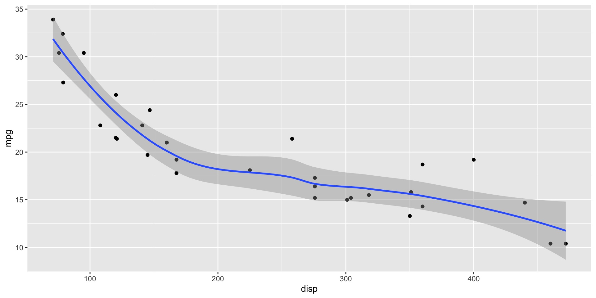

| Seminar dates and topics | ||
| Date | Topics | Required reading |
|---|---|---|
14 February 2024 |
|
Lazer, D., & Radford, J. (2017). Data ex Machina: Introduction to Big Data. Annual Review of Sociology, 43(1), 19–39. |
6 March 2024 |
|
Fiesler, C., & Proferes, N. (2018). ‘Participant’ Perceptions of Twitter Research Ethics. Social Media + Society, 4(1). |
13 March 2024 |
|
Guess, A. M., Barberá, P., Munzert, S., & Yang, J. (2021). The consequences of online partisan media. PNAS, 118(14). |
27 March 2024 (Easter break) Move to: 20 March 2024? |
|
Bonikowski, B., Luo, Y., & Stuhler, O. (2022). Politics as Usual? Measuring Populism, Nationalism, and Authoritarianism in U.S. Presidential Campaigns (1952–2020) with Neural Language Models. Sociological Methods & Research, 51(4), 1721–1787. Schwemmer, C., & Wieczorek, O. (2020). The Methodological Divide of Sociology: Evidence from Two Decades of Journal Publications. Sociology, 54(1), 3–21. |
3 April 2024 (Easter break) Move to: 10 April 2024? |
|
Gilardi, F., Alizadeh, M., & Kubli, M. (2023). ChatGPT outperforms crowd workers for text-annotation tasks. PNAS, 120(30). Reiss, M. V. (2023). Testing the Reliability of ChatGPT for Text Annotation and Classification: A Cautionary Remark. arXiv Preprint. |
17 April 2024 |
|
Chan, C., Schatto-Eckrodt, T., & Gruber, J. B. (2024). What makes computational communication science (ir)reproducible? Working Paper. Nyhan, B., Settle, J., Thorson, E., Wojcieszak, M., Barberá, P., et al. (2023). Like-minded sources on Facebook are prevalent but not polarizing. Nature, 620(7972), 137–144. |
22 May 2024 |
|
Bauer, P. C., & Landesvatter, C. (2023). Writing a reproducible paper with RStudio and Quarto. OSF Preprint. |
Introduction
Sebastian Stier
University of Mannheim & GESIS
2023-02-14
About me
- Dr. in Political Science in 2016 at the University of Heidelberg
- Since 2016, Postdoc/Senior Researcher at GESIS – Leibniz Institute for the Social Sciences
- No R or programming training during my studies
- Since 2023 Scientific Director Department Computation Social Science, GESIS – Leibniz Institute for the Social Sciences & Professor of Computation Social Science
My research interests
About you
- Who are you?
- What’s your study program and which semester are you in?
- What are your experiences with programming? If applicable, which R packages have you used?
- What are your motivations for taking the class?
- Why this course? Which topics/methods/data do you want to learn more about?
Learning objectives
- Advanced understanding of concepts, methods, data used and challenges in CSS
- Critical reflection of the applicability of CSS in social science research
- Learning to use CSS methods in R
- Application of CSS methods in R for own research question
Modus operandi in the class
- Required reading: (mostly) applications
- We’ll discuss these papers in the class
- We’ll code in the class \(\rightarrow\) please bring your laptop
- Questions are always possible, this is supposed to be interactive
Requirements for examination/grades
- Regular participation in class
- Writing a review of the two required readings for two classes to be submitted on Monday before the selected sessions (Studienleistung/Coursework)
- Presentation of your own research idea for your term paper in the last session on 22 May 2024
- Written term paper based on an analysis in R (max. 5,000 words), deadline: 31 July 2024 (Prüfungsleistung/Examination)
Information management and communication
- Slides and materials will be available online: http://sebastianstier.com/ma_css24/
- Data might be shared via Cryptshare
- Submit reviews for class and term paper to sebastian.stier@gesis.org
- Communication
- Via sebastian.stier@gesis.org
- In person after the class
- Via Zoom
Format of reviews
- Review of the two required readings needs to be submitted before two classes of the semester
- Some questions you could ask:
- Describe what problem or question these papers address and the main contributions that they make towards a solution or answer.
- Reflect on the main strengths and weaknesses of these papers.
- What are the concepts, hypothesized social mechanisms and operationalizations used in the papers?
- What are the data in use? How are the data analyzed? Does this seem appropriate?
- How convincing do you find the arguments presented by the authors? Are the conclusions backed up by the empirical results?
- Do you see any ethical concerns?
- How do you judge the replicability of these papers?
- If applicable, are there commonalities or differences between the two papers?Format of term paper (~5,000 words)
- Brief motivation and research question
- Concise theoretical overview: for what conceptual and theoretical reasons do I choose these data and methods?
- Research design
- Data and variables
- Method: no detailed mathematical description needed, but why does this method fit my research question and my data?
- Results
- Analysis code as an R script: needs to be fully reproducible
The elephant in the room: LLMs, ChatGPT et al.
Heterogeneity of previous
Before we get started with coding…

HTML divs and spans with Pandoc
Pandoc translates this to
Incremental lists
- item 1
- item 2
- item 3
Incremental Slides
Use . . . syntax
This appears first
This second
Fragments, Basics
Fragments, Basics
Fade in
Fade out
Highlight red
Fade in, then out
Slide up while fading in
Fragments, More
This is an important sentence!
Fade in > Turn red > Semi fade out
Slide Transition
fade
Slide Transition
slide
Slide Transition
convex
Slide Transition
concave
Slide Transition
zoom
Slide Transition, global
Column layout
:::: {.columns}
::: {.column width="40%"}
Left column
:::
::: {.column width="60%"}
Right column
:::
::::Left column
Right column
Column layout
Rows: 32
Columns: 11
$ mpg <dbl> 21.0, 21.0, 22.8, 21.4, 18.7, 18.1, 14.3, 24.4, 22.8, 19.2, 17.8,…
$ cyl <dbl> 6, 6, 4, 6, 8, 6, 8, 4, 4, 6, 6, 8, 8, 8, 8, 8, 8, 4, 4, 4, 4, 8,…
$ disp <dbl> 160.0, 160.0, 108.0, 258.0, 360.0, 225.0, 360.0, 146.7, 140.8, 16…
$ hp <dbl> 110, 110, 93, 110, 175, 105, 245, 62, 95, 123, 123, 180, 180, 180…
$ drat <dbl> 3.90, 3.90, 3.85, 3.08, 3.15, 2.76, 3.21, 3.69, 3.92, 3.92, 3.92,…
$ wt <dbl> 2.620, 2.875, 2.320, 3.215, 3.440, 3.460, 3.570, 3.190, 3.150, 3.…
$ qsec <dbl> 16.46, 17.02, 18.61, 19.44, 17.02, 20.22, 15.84, 20.00, 22.90, 18…
$ vs <dbl> 0, 0, 1, 1, 0, 1, 0, 1, 1, 1, 1, 0, 0, 0, 0, 0, 0, 1, 1, 1, 1, 0,…
$ am <dbl> 1, 1, 1, 0, 0, 0, 0, 0, 0, 0, 0, 0, 0, 0, 0, 0, 0, 1, 1, 1, 0, 0,…
$ gear <dbl> 4, 4, 4, 3, 3, 3, 3, 4, 4, 4, 4, 3, 3, 3, 3, 3, 3, 4, 4, 4, 3, 3,…
$ carb <dbl> 4, 4, 1, 1, 2, 1, 4, 2, 2, 4, 4, 3, 3, 3, 4, 4, 4, 1, 2, 1, 1, 2,…Output location, column-fragment
Output location, column

Output location, fragment

Output location, slide
Output location, slide

Code line-highlighting
Use #| code-line-numbers: "3" syntax - will highlight line 3 and fade others

Code line-highlighting
with a “fragment style”

Code line-highlighting
highlight different line ranges progressively

Stack images


Stack images
Themes, Colors and other bling
Background color and image
Background color:
Themes
see https://quarto.org/docs/presentations/revealjs/themes.html
Themes via custom SASS
custom.scss:
Themes via Extensions
Install Extension (in the folder of your presentation):
use in yaml header:
Very creative themes can be found here
Examples